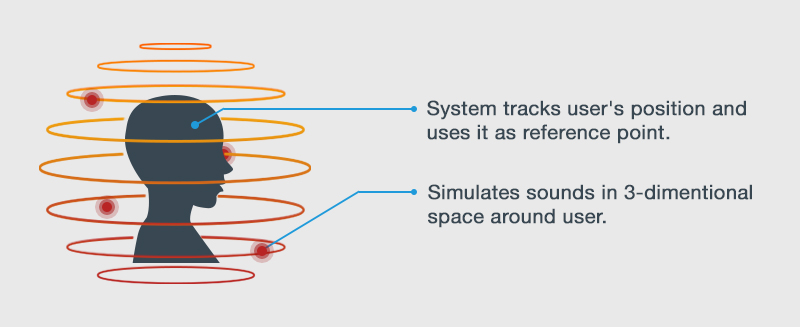

Spatialized audio
Beginner Designer Programmer
Spatialized audio, also called 3D audio, simulates three-dimensional sound. This creates more realistic audio than non-spatialized audio.
In real life, our experience of sound is affected by factors including its volume, the surrounding area (such as a cave or small room), and the position and movement of the sound source. We can usually tell approximately where a sound is coming from and whether it's moving.

For example, the frequency (pitch) of the sound coming from a moving object varies depending on the observer's position (the Doppler effect). Sound from an approaching source has a higher frequency than sound from a receding source:
To simulate realistic 3D audio, Stride tracks the positions of two entities in the scene:
- audio emitters, which emit audio
- audio listeners, which hear the sound emitted by audio emitters
You must have both audio emitters and audio listeners to hear spatialized sound in a scene.
Spatialized audio is widely used for sound effects in platform, desktop, and VR games. For example, a gun might make a gunshot sound when fired, or a character might make a footstep sound when they take a step.
Note
Spatialized audio uses more CPU than non-spatialized audio.
Enable spatialized audio
When you import your audio, select Spatialized Sound as the asset type.
You can also set audio to spatialized in the asset's Property Grid:
In Asset View, select Audio Asset.
In the Property Grid, select the Spatialized checkbox:
Note
Stride processes spatialized audio as mono (single-channel) audio. It doesn't alter the source file.